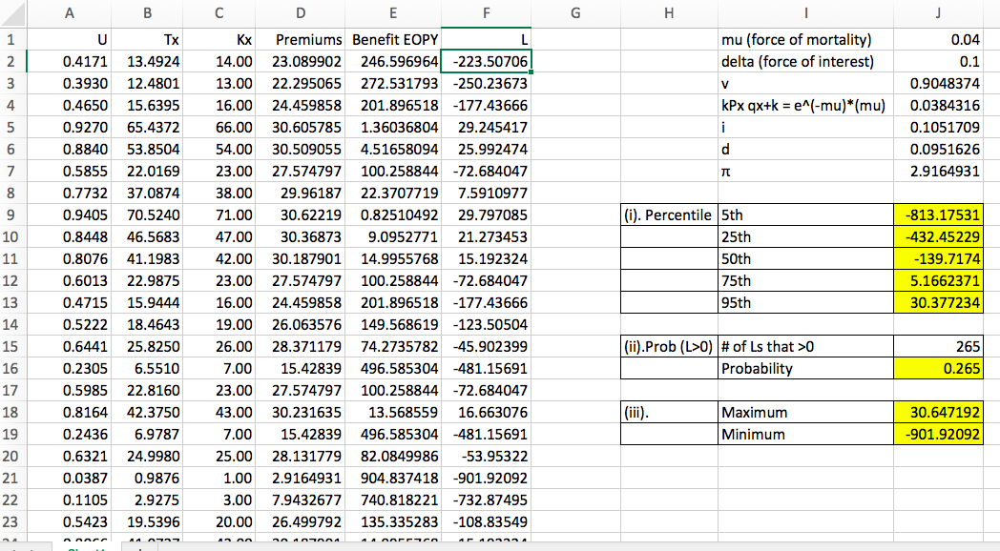
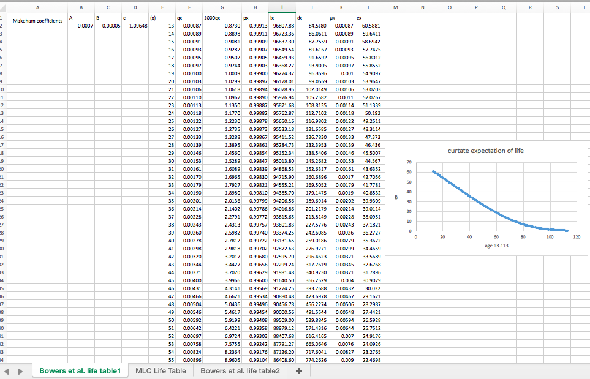
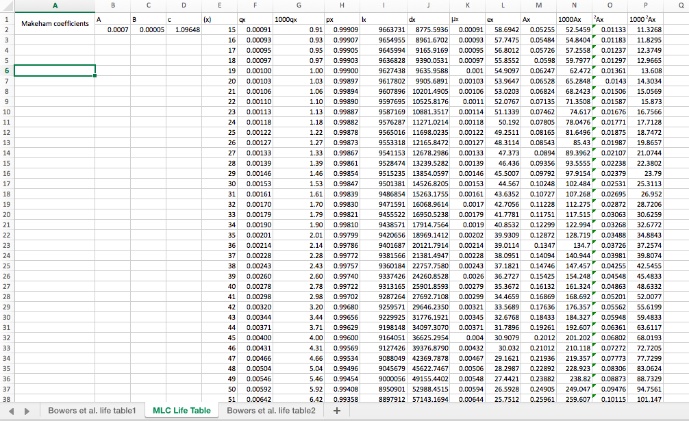
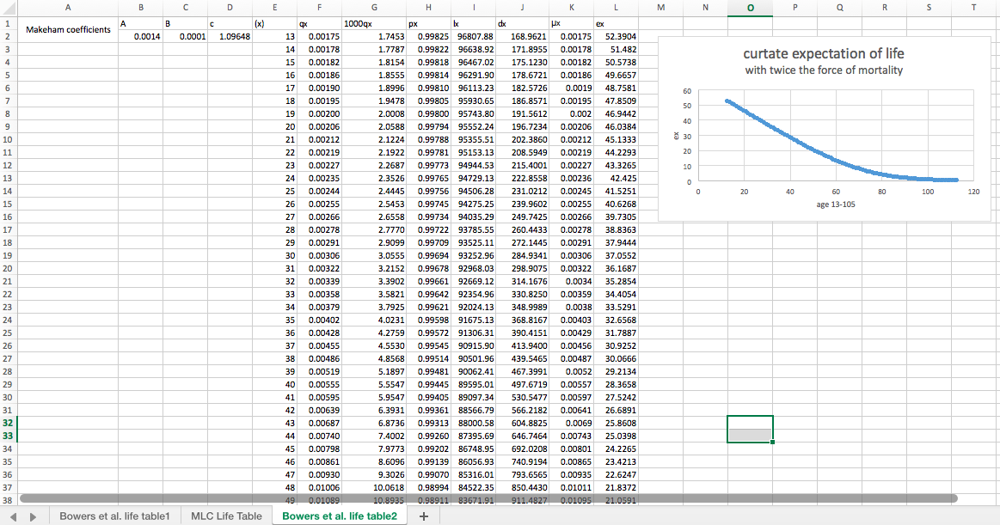

My works
Sample Project One
Simulating the distribution for the Loss at Issue (L) random variable for a fully discrete whole life insurance with benefit of 1000 paid at the end of the policy year of death with annual premiums paid at the beginning of each that the insured is alive. The premiums are calculated assuming the equivalence principle. We can use arbitrarily any constant force of mortality of μ= 0.04 and a constant force of interest of δ=0.10.

Sample Project Two
Three life tables
I replicated one life table from Bowers et al., then adjust the lx’s so that they match the MLC Illustrative Life Table. Finally I altered the force of mortality to create a third table. Given Makeham’s mortality holds where μx=A+Bc^x. * Makeham’s formula is notgood for the younger ages.


